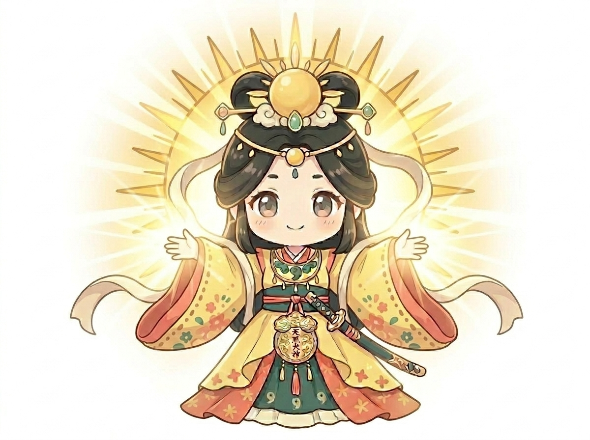
アマテルちゃん
天照大御神
太陽みたいに明るい中心キャラ。神社の基本や、光にまつわる神話をやさしく案内します。
- 担当
- 開運、神社の基本
- 好き
- 朝日、鏡、きらきらしたもの
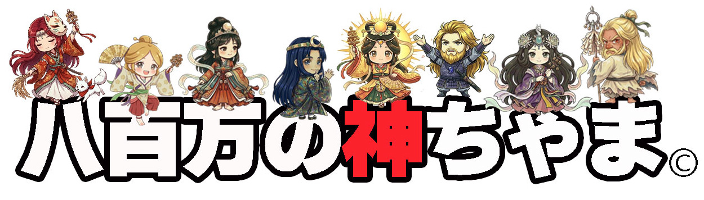
参拝前に知っておきたい基本を、短くわかりやすく。
古事記や地域信仰の入り口を、親しみやすい言葉で。
神社巡りで見つけたい見どころや豆知識を紹介。
Characters

天照大御神
太陽みたいに明るい中心キャラ。神社の基本や、光にまつわる神話をやさしく案内します。
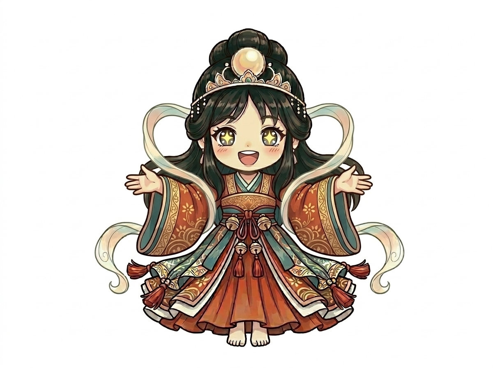
市杵嶋姫命
水辺と芸能にゆかりのある、上品で華やかなキャラ。弁天さまの話題も得意です。
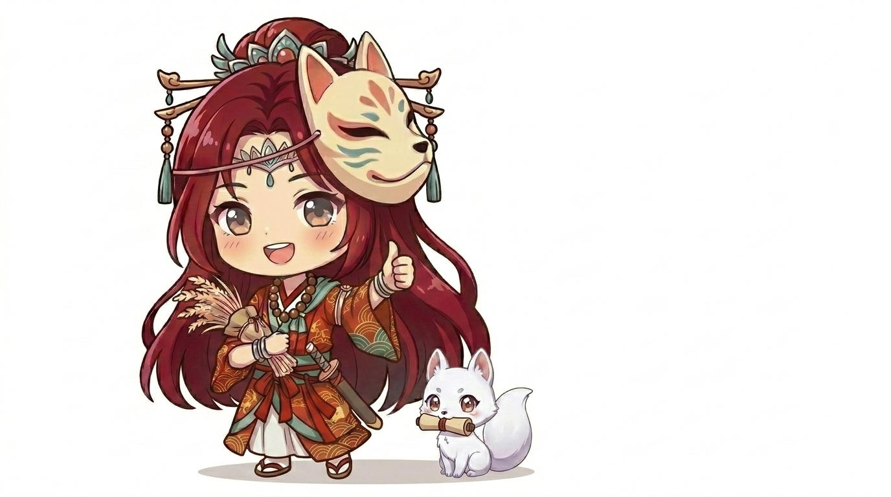
宇迦之御魂神
稲穂を大切にする商売繁盛の案内役。稲荷社や朱色の鳥居の豆知識を届けます。
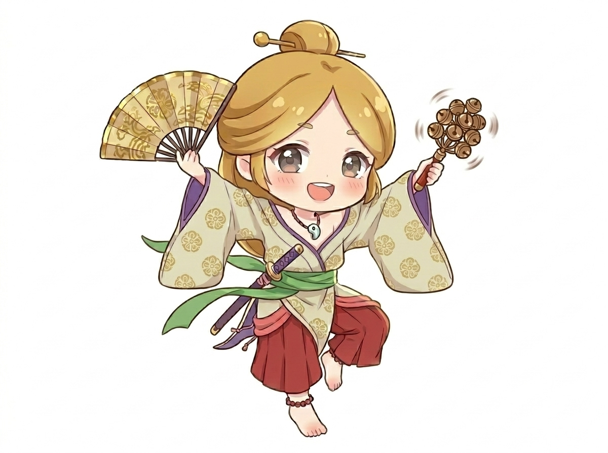
天鈿女命
笑いと舞で場を明るくするムードメーカー。神楽や芸能の話を楽しく紹介します。
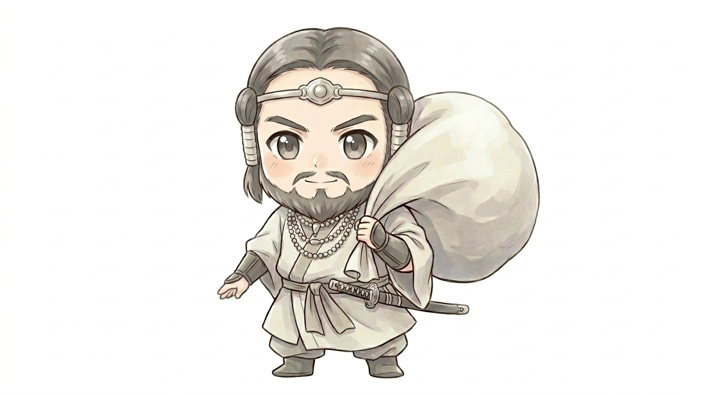
大国主命
縁結びと国づくりに詳しい頼れる兄貴分。人と人をつなぐ話が得意です。
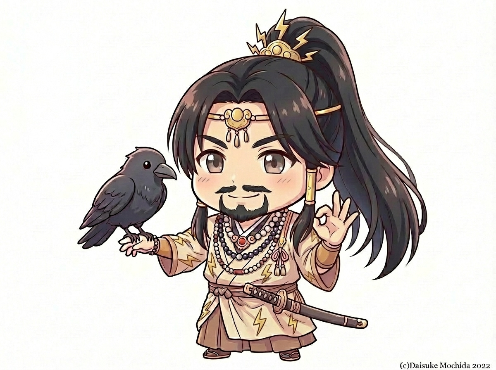
賀茂別雷大神
雷のように元気な京都好きキャラ。賀茂社や厄除け、清めの話題で活躍します。
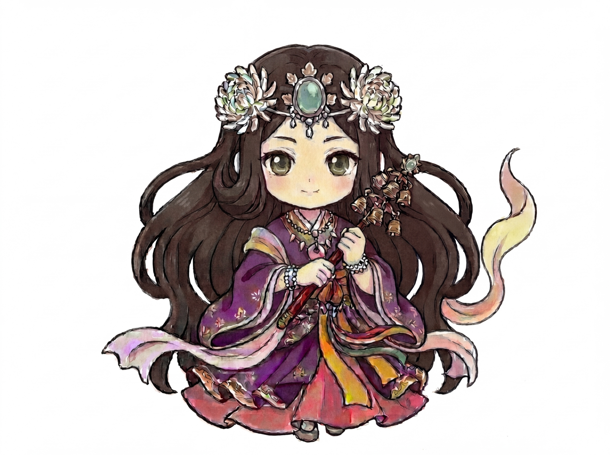
菊理媛
ご縁や仲直りをそっと結ぶ聞き上手。白山信仰やむすびの雑学を担当します。
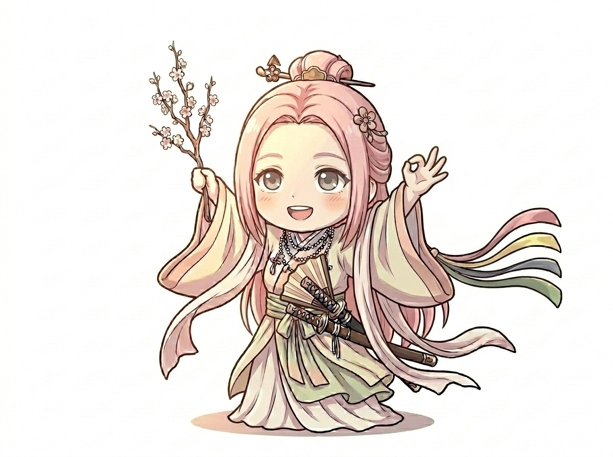
木花開耶姫命
桜のように華やかな山の姫キャラ。富士山、花、安産にまつわる話を届けます。
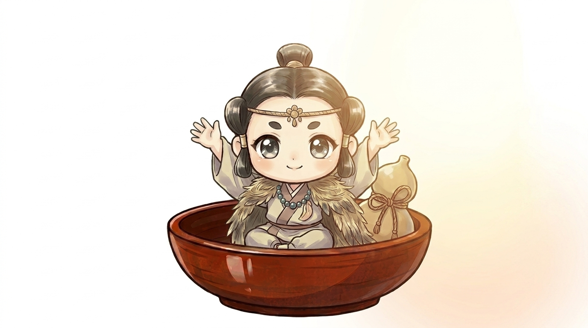
少彦名命
小さな体で知恵いっぱい。医薬、温泉、旅先の不思議な神社を案内します。
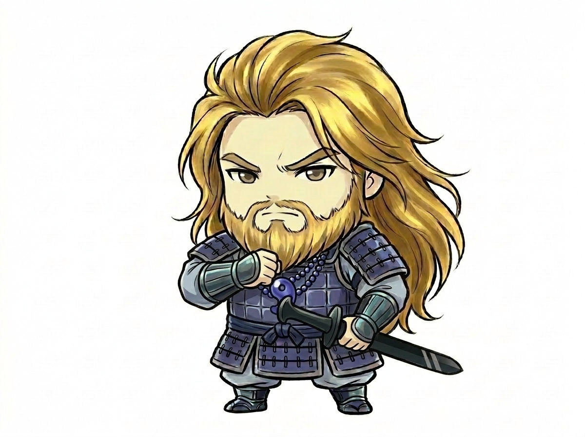
素戔嗚尊
勢いのある熱血タイプ。厄除け、勝負運、荒ぶる神様の物語を力強く紹介します。
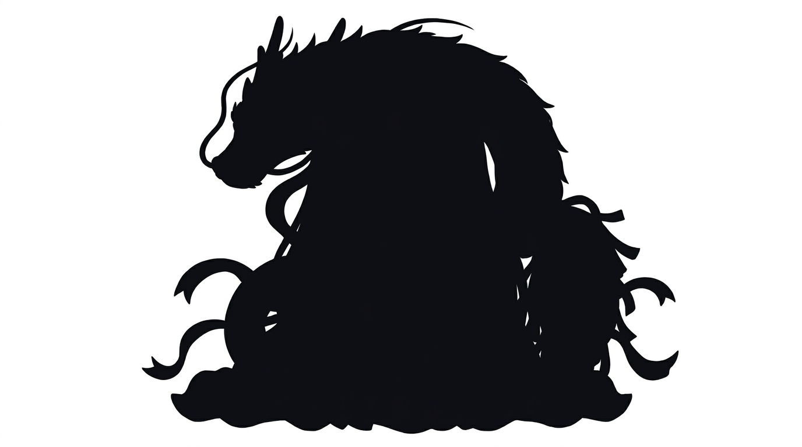
？？？？
清らかな流れをまとう水のキャラ。祓い、川、滝にまつわる神社雑学を担当します。
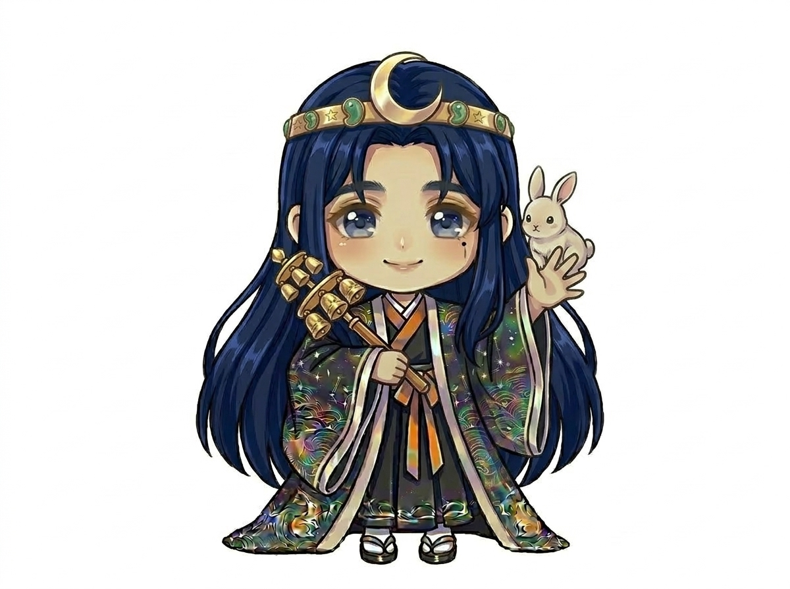
月読尊
月と夜の静けさを愛する語り部。暦や夜空にまつわる神話を落ち着いて解説します。
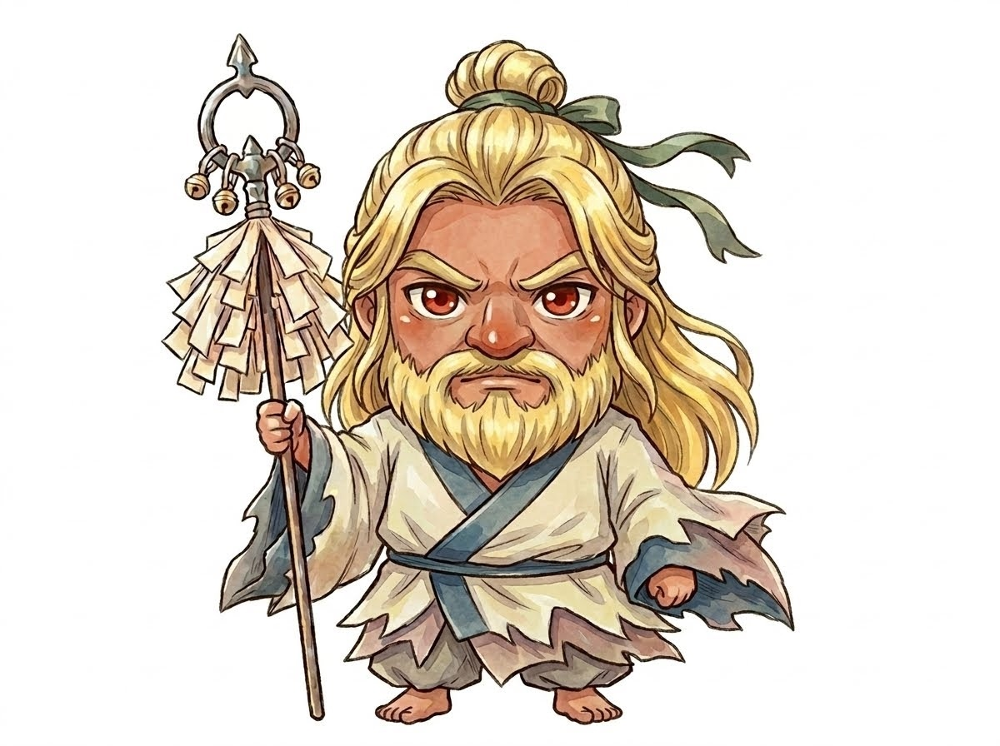
猿田彦大神
道案内が得意な先導役。旅、交通安全、ものごとの始まりを応援します。
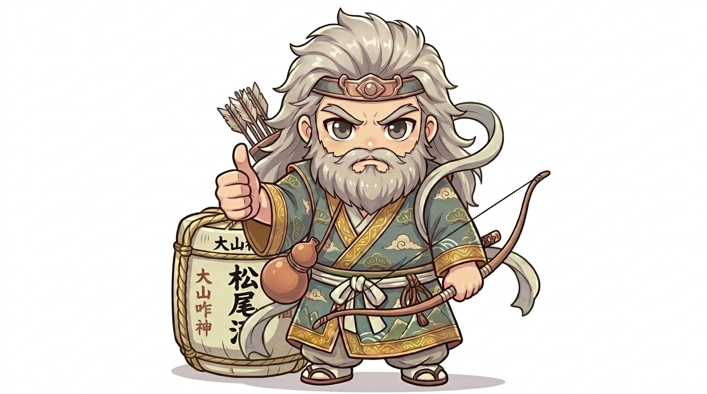
大山咋神
山と土地を守るおだやかなキャラ。日吉・日枝の神社や山の信仰を紹介します。
Kami Encyclopedia
神ちゃまたちの、もとになった神様をまとめました。
開運
アマテルちゃんのもとになった、太陽と光を象徴する神様です。
芸能
イチちゃんのもとになった、水辺や芸能にゆかりの深い神様です。
商売
ウカちゃんのもとになった、稲荷信仰や五穀豊穣の神様です。
芸能
ウズメちゃんのもとになった、舞や笑い、芸能にゆかりのある神様です。
YouTube
公式動画IDに差し替えるだけで、そのまま埋め込み表示できます。